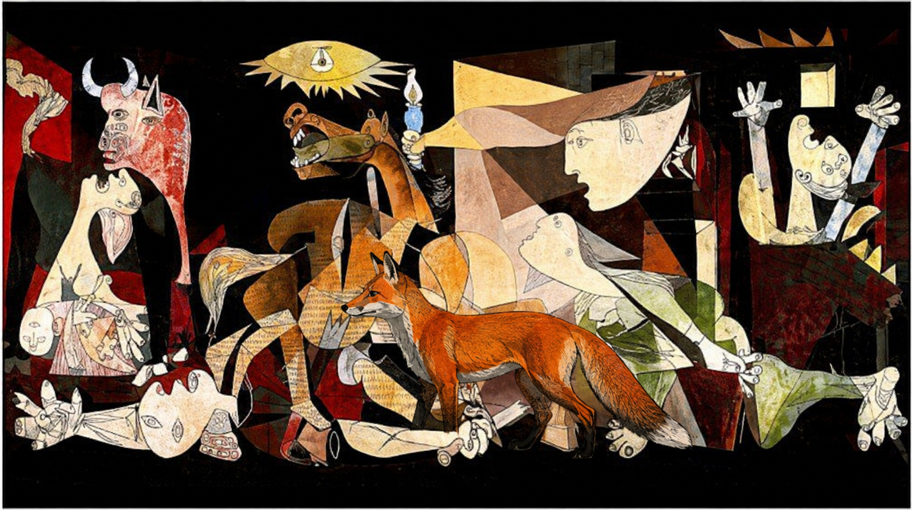

C
Guernica - Pablo Picasso - 1937
Cette toile monumentale est une dénonciation engagée du bombardement de Guernica, qui venait de se produire le 26 avril 1937, lors de la guerre d'Espagne. Picasso réalise cette huile sur toile de style cubiste entre le 1er mai et le 4 juin 1937, à Paris

Renarnica - Pablo el zorro - 2026
Le tableau Renarnica de Pablo el zorro réincarne la représentation du bombardement de guernica avec les personnages du tableau en animaux. Ils carécterisent tous un symbole de cette guerre civile, par exemple: Le renard représentant le courage et la détermination face à ce massacre. L'artiste a voulu exprimer le caos de la guerre dans cette oeuvre cubiste tout en étant original. Mais la présence de couleur renforce l'idée de dénoncer les
- Date de création de l'œuvre : 1937
- Technique : Peinture à l'huile sur toile
- Dimensions : 351 x 782 cm ( 3,5 x 8 m)
- Son lieu de conservation /d'exposition : Musée Reina Sofia, Madrid, Espagne.